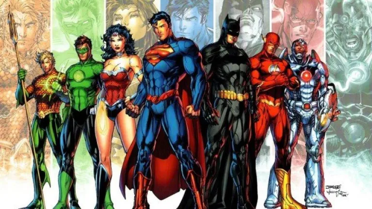
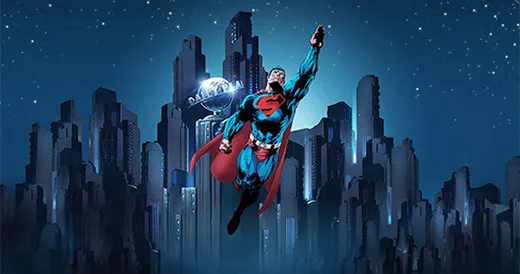
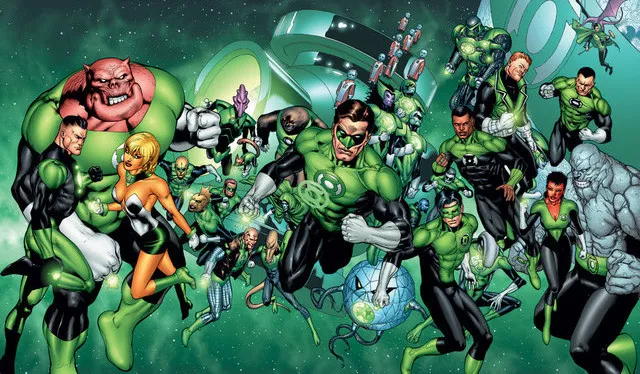

DC COMIC
DC Comics es una editorial estadounidense, parte de DC Entertainment, que a su vez es parte del holding del monstruo de la entretención Time Warner. Fundada en 1934 bajo el nombre «National Allied Publications», cambió en 1937 a DC Comics, abreviatura de Detective Comics, uno de los primeros éxitos de la compañía.
DC Comics es reconocido a nivel mundial por su universo de superhéroes, ente los que se cuentan Superman, Batman, la Mujer Maravilla, Flash, Linterna Verde, Aquaman, Flecha Verde y grupos de héroes como la Liga de la Justicia o Los Jóvenes Titanes.
La editorial también publica comics no relacionados a su universo heroico, como Watchmen, V de Vendetta o The Sandman. Pero estos trabajos, como muchos otros, los publica bajo sus otros sellos, como Vertigo o Milestone Media.

Orígenes (1935-1938)
National Allied Publications debutó con una revista de tamaño tabloide titulada The Big Comic Magazine, fechada en febrero de 1935. El segundo título de la editorial fue New Comics (diciembre de 1935) y su tamaño fue mas cercano al utilizado en la llamada Edad de Oro de la historieta estadounidense (por si alguien se lo pregunta, este formato es algunos centímetros más grande al usado hoy). Con los años, New Comics pasaría a llamarse Adventure Comics, y seguiría publicándose hasta el año 1983.
Debido a las deudas que tenía con la imprenta, en 1937 entró un nuevo socio y se comenzó a publicar Detective Comics, una antología de relatos, principalmente de aventuras. Wheeler-Nicholson permaneció en la compañía por un año más, pero sus problemas financieros lo forzaron a renunciar. Así nació Detective Comics Inc., que poco tiempo después compró el remanente de National Allied en una subasta por bancarrota.
La nueva administración lanzó Action Comics, que en su primer número presentaba a Superman en su portada. Fechada en junio de 1938, Action Comics fue la primera revista de historietas en presentar un arquetipo que pronto sería reconocido como “superhéroe”. Y gran sorpresa, la idea resultó ser un súperVentas.
Aprovechando este sorpresivo éxito, la editorial pronto presentaría nuevos superhéroes, como Sandman y Batman.

La Edad de Oro (1938-1956)
Ya con el nombre de DC Comics, la editorial inició las publicaciones periódicas de superhéroes con un éxito extraordinario y así se consolidaron personajes como Superman, Batman, Mujer Maravilla e incluso, el primer equipo de superhéroes: la Sociedad de la Justicia de América (Justice Society of America). Por supuesto, en esta América no estaba incluido el resto del continente, pero hasta el día de hoy, los gringos no entienden que América es un continente y no el nombre de su país.
A finales de la década del ’40, los superhéroes empezaron a decaer y la compañía intentó centrarse en otros géneros como la ciencia ficción, los westerns, el humor e incluso el cómic romántico. Sin embargo, DC no trabajó con la tendencia más importante en aquella época: los relatos de crimen y horror.
Pero la historia es curiosa, pues cuando estos cuentos de terror perdieron popularidad en los ’50, DC no tuvo los problemas económicos de quienes explotaron esta línea editorial. Durante todo ese difícil período, siguió publicando algunos títulos de superhéroes, en particular Action Comics y Detective Comics, las dos publicaciones de cómic más largas de la historia gringa.
